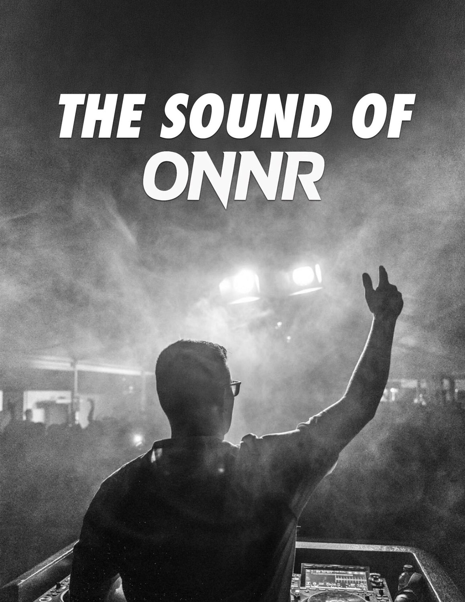
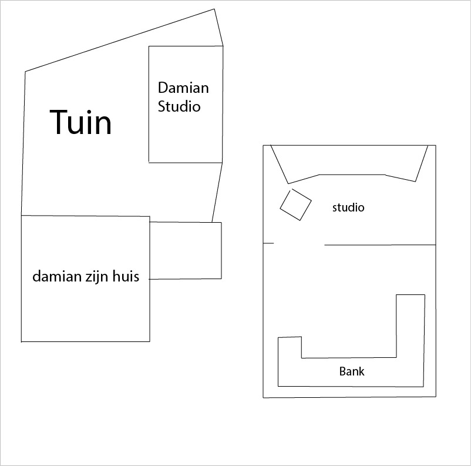

Pre-productie · ONNR Docu
Concept documentaire
Een documentaire over mijn vriend Damian: dj en muziekproducer met zijn eigen studio. Ik interview hem thuis in zijn studio en op zijn stage, en laat zien hoe zijn sound ontstaat.
Hoofdpersoon
Damian Croiset van Uchelen
Locatie
Bij hem thuis in zijn studio en op zijn stage
Vorm
Documentaire met interview en sfeerbeelden
Interviewvragen
De vragen zijn opgedeeld per onderwerp en worden nog aangepast — ze zijn nog niet definitief.
Intro — wie is Damian?
- Hoe heet jij en wie ben je?
- Hoe zou je jezelf omschrijven, los van dj zijn?
- Wat doe je graag buiten muziek?
Eerste interesse in muziek
- Wanneer begon je interesse in muziek?
- Wanneer dacht je: dit wil ik serieus doen?
- Welke artiesten inspireren jou?
Begin als dj
- Hoe ben je begonnen met draaien?
- Wat was je eerste optreden en hoe voelde dat?
- Wat waren in het begin je grootste uitdagingen?
- Heb je ooit gedacht om te stoppen?
Muziek maken & studio
- Wat betekent deze studio voor jou?
- Hoe ziet een dag muziek maken eruit?
- Waar haal je inspiratie vandaan?
- Hoe ontstaat een track bij jou, van idee tot eindproduct?
- Wanneer is een track voor jou “af”?
- Hoe zou je jouw sound omschrijven?
Op het podium
- Wat voel je vlak voor een optreden?
- Wat gaat er door je heen als je het publiek ziet?
- Wat is een optreden dat je nooit vergeet?
- Hoe ga je om met fouten tijdens een set?
- Wat betekent het publiek voor jou?
Persoonlijk
- Wat motiveert jou om door te gaan?
- Wat vind je het leukste aan dj zijn?
- Wat is de grootste opoffering die je hebt moeten maken?
- Wie steunt jou het meest?
Toekomst & dromen
- Wat is je grootste droom als dj?
- Waar zie je jezelf over 5 jaar?
- Met welke artiest zou je ooit willen samenwerken?
- Wat wil je dat mensen voelen bij jouw muziek?
- Wat zou je tegen je jongere zelf zeggen?
Planning
| Week | Datum | Activiteit |
|---|---|---|
| Week 1 | 2 – 6 feb | Voorbereiding |
| Week 2 | 9 – 13 feb | Voorbereiding |
| Week 3 | 16 – 20 feb | Shotlist, tijden & locatie plannen |
| Vakantieweek | 23 feb – 1 maart | Filmen |
| Week 4 | 2 – 6 maart | Filmen |
| Week 5 | 9 – 13 maart | Bewerken |
Locatie
Plattegrond van de opnamelocatie: Damians huis met de studio in de tuin, en de indeling van de studio met de bank en de dj-opstelling.
